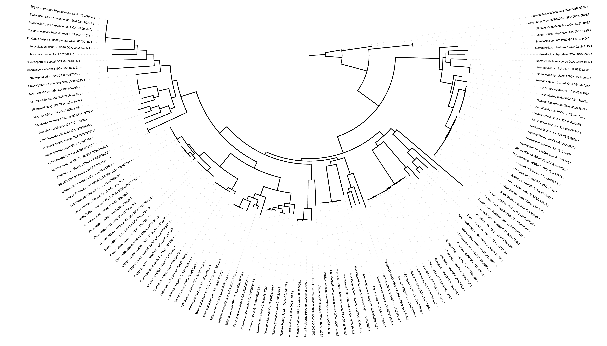

bash
conda install -c bioconda ncbi-datasets
conda install -c bioconda busco
conda install -c bioconda iqtree2
conda install -c bioconda mafftMisha Paauw
October 31, 2025
Microsporidia are eukaryotic microbes that act as intracellular parasites, infecting insects, crustaceans, fish, and even humans. In a recent project, I assembled the genome of a new microsporidium strain. A good question to ask when obtaining a new genome is: where does this strain belong in the Microsporidium phylogeny? To answer this question, we built a genome-scale phylogenetic tree using 250 conserved genes across all published Microsporidian genomes. This post documents the complete workflow, from identification of conserved genes to building the phylogenetic tree, along with some of the computational lessons I learned along the way.
Essentially, a phylogenetic tree is a reconstruction of the evolutionary history of a group of organisms. Today, these trees are built using molecular genetic data. Sequences of nucleotides or amino acids are aligned into a multiple sequence alignment (MSA), and tree-inference software like iqtree how closely related the different sequence are to each other. While this is often done with DNA sequences that encode ribosomal RNA (rDNA), using conserved genetic information of many more loci produces more robust phylogenetic trees. As discussed in our previous blog post, the growing availability of complete genomes allows us to mine for conserved genes to build a multi-gene phylogenetic tree.
Briefly, the workflow consists of the following steps:
ncbi-datasetsbuscoMAFFTiqtree2Let’s go!
We will work on the command line, and preferably, on a compute cluster. Especially the tree building command will take a lot of compute power and time. Before we start, we need to install the required programs. We do this using conda:
First, head to the NCBI Genome website and search for your taxon of interest. In our case, we retrieved a table containing the metadata of all available microsporidia genome assemblies (n = 124). Then, we pasted the GCA_xx accession numbers in a simple text file (here: msp_genomes_genbank.txt). We will then use the large genome downloads instruction by NCBI to download the fasta files containing the genome assemblies.
bash
(base) [mpaauw@omics-h0 msp_phylogeny]$ head -n 4 msp_genomes_genbank.txt
GCA_036630325.1
GCA_000091225.2
GCA_000146465.1
GCA_022605425.2
(base) [mpaauw@omics-h0 msp_phylogeny]$ cat 1_download_msp.sh
datasets download genome accession --inputfile msp_genomes_genbank.txt --dehydrated --filename /scratch/misha/msp_phylogeny/msp_genomes.zip
unzip /scratch/misha/msp_phylogeny/msp_genomes.zip -d /scratch/misha/msp_phylogeny/msp_genomes
datasets rehydrate --directory /scratch/misha/msp_phylogeny/msp_genomesBUSCO genes are highly conserved, single-copy genes found across (nearly) all organisms in a taxonomic group, making them ideal markers for comparing evolutionary relationships. I used the following script to run BUSCO on all genomes downloaded above. In this script, each genome is analyzed sequentially, which took about 15 seconds per genome, 30 minutes in total. Perfect for a lunch break run, but if I would have more or larger genomes to analyze, I would probably optimize this script to submit many jobs in parallel to the compute cluster.
bash
(busco_2025) [mpaauw@omics-h0 msp_phylogeny]$ cat 2_run_busco.sh
OUTDIR="/scratch/misha/msp_phylogeny/busco_test"
mkdir -p "$OUTDIR"
for fna in /scratch/misha/msp_phylogeny/msp_genomes/ncbi_dataset/data/*/*.fna; do
genome=$(basename "$(dirname "$fna")")
outpath="$OUTDIR/${genome}"
busco -i $fna -l microsporidia_odb12 -m genome -o $genome -c 12 --out_path $OUTDIR
done*) to define a list of all the .fna files that were downloaded.
GCA_1234
mirosporidia_odb12, we use genome mode (-m genome), and specify the use of 12 threads (-c 12).
The number of BUSCO genes detected in each genome will vary, depending on how complete the genome assembly is. This is interesting to inspect, but we are not worried about some low scoring genomes (that is: incomplete genomes) for this analysis. If you’ve never used BUSCO before, go ahead and inspect the output files of one genome. You’ll find a summary, a full table of all detected BUSCOs in this genome, and even amino acid sequences of each detected BUSCO in this genome.
Next, we need to extract the sequences of all identified ‘complete’ BUSCO genes from all genomes. This will require some scripts to parse and manipulate BUSCO output files. First, we find out which BUSCOs are most conserved in our genome set. We then pick the 250 most conserved BUSCOs. This number is arbitrary, and it’s a trade-off between calculation speed and phylogenetic resolution.
bash
(busco_2025) [mpaauw@omics-h0 msp_phylogeny]$ cat 3_get_buscos.sh
for file in $(find /scratch/misha/msp_phylogeny -type f -name "full_table.tsv"); do
echo $file
grep -v "^#" ${file} | awk '$2=="Complete" {print $1}' >> all_detected_buscos.txt;
done
cat all_detected_buscos.txt | sort | uniq -c | sort | tail -n 250 | column -t | cut -d ' ' -f 3 > conserved_buscos.txtfind condition, that is: the output files full_table.tsv from each BUSCO run.
full_table.tsv file to get rid of comment fields (grep -v "^#"), and extract each ‘complete’ BUSCO ID that was identified. Each BUSCO ID that was detected in different genomes will occur multiple times in this list. Yes, that’s a long list!
sort the long list and count (uniq -c) how often each BUSCO ID was detected. We then sort again to see which BUSCOs are found most often. Taking the tail -n 250 gives us the IDs of the 250 most conserved BUSCO genes in our genome set.
Next, we need to pull out the amino acid sequences of each BUSCO gene from each genome. We will use a nested loop in the following script: the first one loops over each genome BUSCO output, and the second one loops over each selected BUSCO ID. We will prepare by making two folders, one to contain all indidivual BUSCO amino acid sequence fasta files, and one where we will collect 250 multi fasta files with about 120 entries for each BUSCO id: mkdir -p busco_aa and mkdir -p busco_aa_concat
bash
(busco_2025) [mpaauw@omics-h0 msp_phylogeny]$ cat 4_get_busco_seqs.sh
for genome in $(find /scratch/misha/msp_phylogeny -type d -name "single_copy_busco_sequences"); do
accession=$(echo "$genome" | awk -F'/' '{print $6}')
while read busco; do
cp $genome/$busco.faa busco_aa/$busco-$accession.faa
sed -i "s/^>.*/>${accession}/g" busco_aa/$busco-$accession.faa
done < conserved_buscos.txt
donegenome pathname. In my case the accession ID was in column 6, this may vary!
buscoID-accession.faa format.
sed to add accession information to fasta header.
Since not all BUSCO genes are present in all genomes, this will give us some file not found warnings. That’s fine. Next, we simply need to concatenate the files with the same BUSCO ID together into multiline fasta files:
Let’s do a sanity check:
There are many tools to make MSAs (clustal omega, MUSCLE, MAFFT), today we use MAFFT. Again, we loop over the list of conserved BUSCOs and run MAFFT on each BUSCO. Just like for the BUSCO identification, if I would have had more sequences to align I would have optimized this for parallel execution of jobs. For now, it takes another coffee break.
Finally, we are ready to infer the phylogenetic tree from the MSAs. First, iqtree selects the best evolutionary model for your dataset, and it does so for each gene in your alignment (or for each merged partition, a collection of genes with similar evolutionary signatures). This is a computationally heavy step, and I learned this the hard way. Some jobs crashed after 12-15 hours, forcing me to optimize and repeat the process. While inspecting the log file of a job that crashed during model finding for partition 32/32 (yes, that was frustrating!), I discovered that iqtree selected the same model for nearly all partitions it had analyzed so far. Therefore, I choose to run iqtree again with that model for all partitions. Because this is a long job that consumes a lot of computational power, we submit this job to the compute nodes via SLURM:
bash
# First concatenate all alignments
(iqtree) [mpaauw@omics-h0 msp_phylogeny]$ iqtree2 -p busco_aligned --out-aln concatenated_alignment
(iqtree) [mpaauw@omics-h0 msp_phylogeny]$ cat 7_tree_slurm.sh
#!/bin/bash
#SBATCH --job-name=iqtree_tree
#SBATCH --cpus-per-task=32
#SBATCH --mem=200G
#SBATCH --time=48:00:00
#SBATCH --output=iqtree_%j.out
#SBATCH --error=iqtree_%j.err
iqtree2 -s concatenated_alignment -p concatenated_alignment.nex -m Q.yeast+F+I+R6 -T 32 -B 1000 --prefix output_tree
(iqtree) [mpaauw@omics-h0 msp_phylogeny]$ sbatch 7_tree_slurm.sh # submit the job!iqtree needs the concatenated alignment, a partition file, and the model you selected (if you don’t want to run ModelFinder again). Furthermore, we specify that iqtree can use 32 threads (-T 32), and that we want 1000 ultrafast bootstrap replicates (-B 1000).
iqtree produces a number of output files. It’s interesting to inspect parts of the .log file to see how the job performed:
bash
(iqtree) [mpaauw@omics-h0 msp_phylogeny]$ tail -n 30 output_tree.log | grep time
CPU time used for tree search: 597057.786 sec (165h:50m:57s)
Wall-clock time used for tree search: 20700.108 sec (5h:45m:0s)
Total CPU time used: 784997.111 sec (218h:3m:17s)
Total wall-clock time used: 27002.981 sec (7h:30m:2s)Wow, the total CPU time to make this tree was 218 hours! That’s 9 days! Luckily, thanks to using 32 threads in parallel, it only took a wall-clock time of 7 hours and 30 minutes. Now, let’s finally look at the phylogenetic tree. The final tree is stored .contree output file and can be visualized in iTOL (for example):

Isn’t that wonderful! Some things to consider here at this point are:
And what about that new microsporidium species? Keep an eye out at the microsporidium literature to find out to which clade it belongs!